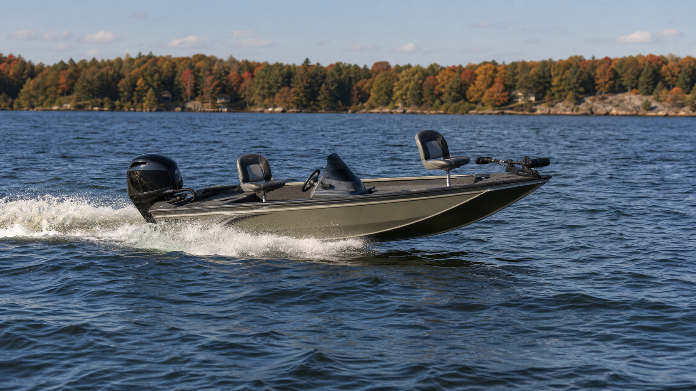

When your phone holds navigation charts, weather radar, and fishing apps, a weak mount becomes dangerous fast. Rough water tests every connection point - the clamp to the rail, the arm to the base, and the holder to your device. One loose component means your $1000 phone bounces across the deck or disappears overboard.
Boat phone mounting requires different priorities than car or office setups. Salt spray corrodes cheap hardware. Constant motion loosens inadequate clamps. Glare from water makes screen positioning critical. And when you need to check depth readings or weather updates quickly, the mount has to put your device exactly where you can see it without leaving the helm.

What Makes Boat Phone Mounts Fail
Consumer-grade phone mounts fail on boats because they are designed for smooth roads and climate-controlled interiors. The constant vibration from engines and wave impact loosens threaded connections. Salt air corrodes aluminum and steel components. Plastic holders become brittle from UV exposure and crack when stressed.
The mounting location matters more on boats than anywhere else. A rail-mounted phone needs to stay visible from the captain's position while avoiding spray zones. Dashboard mounts must account for the boat's heel angle in turns. And any mount near the stern has to survive prop wash and following seas.


iBOLT Moto-Vise™ IncrediBOLT™ 360 Heavy Duty Phone Clamp / Handlebar / Rail Mount - $72.95
iBOLT addresses these challenges through modular design and marine-appropriate materials. Rather than forcing one-size-fits-all solutions, the system lets you match the base to your specific rail diameter, the arm length to your sight lines, and the holder strength to your device size.
Rail Clamp Systems for Boat Installation
Most boat phone mounts attach to existing rails, posts, or tube framework. The iBOLT Moto-Vise™ IncrediBOLT™ 360 Heavy Duty Phone Clamp / Handlebar / Rail Mount handles rail diameters from 0.5 to 1.5 inches, covering most boat applications from center consoles to pontoon boats.
The clamp mechanism uses stainless steel hardware and reinforced polymer construction. This combination resists corrosion while maintaining clamping force through temperature changes and vibration. The 360-degree rotation lets you position the phone for optimal viewing regardless of your rail's orientation.

iBOLT Moto-Vise™ XL Holder w/ 25mm / 1-inch Ball - $39.95
Before ordering any rail clamp system, measure your mounting rail with calipers or a ruler. Boat rails vary significantly - some are 7/8 inch, others are 1.25 inches, and custom boats may use metric sizing. A loose clamp will rotate under load, while an oversized clamp cannot secure properly.
Heavy-Duty Holders for Marine Conditions
Standard phone holders use spring-loaded arms or elastic bands that weaken over time. Marine applications demand mechanical retention that maintains grip pressure regardless of temperature, humidity, or vibration.
The iBOLT Moto-Vise™ XL Holder w/ 25mm / 1-inch Ball uses a screw-tightened vise mechanism that physically clamps your device in place. This system works with phones up to 4.5 inches wide, including most devices in protective cases.
For smaller devices or installations requiring frequent removal, the standard iBOLT Moto-Vise™ Holder w/ 25mm / 1-inch Ball provides the same mechanical retention in a more compact package. Both holders accommodate devices with cases, screen protectors, and port covers installed.

iBOLT Moto-Vise™ Holder w/ 25mm / 1-inch Ball - $25.00
Installation Planning for Marine Use
Successful boat phone mounting starts with location selection. The device needs to be visible from your normal operating position without blocking critical instruments or controls. Consider the boat's typical attitude - bow up when on plane, heeled over in turns, or pitching in following seas.
Cable routing becomes critical for charging or data connections. Marine environments demand waterproof connectors and protected cable runs. Plan the cable path before mounting to avoid interference with controls, walkways, or safety equipment.
Salt water exposure varies dramatically by mounting location. A phone mounted inside a center console stays relatively dry, while one mounted on an open flybridge faces constant spray. Choose mounting hardware appropriate for your specific exposure level, and plan for regular freshwater rinses of all metal components.
Comparing iBOLT to Marine-Specific Brands
RAM Mounts dominates the marine mounting market with proven saltwater resistance and extensive product lines. Rokform offers waterproof cases with integrated mounting systems. SeaSucker provides suction-cup solutions for temporary installations.
iBOLT competes through modularity and value. While RAM systems often require multiple adapters and specialty parts, iBOLT integrates common mounting patterns into single products. The Moto-Vise holders work with standard ball-mount arms, AMPS plates, and VESA adapters, simplifying installation and replacement.
For buyers prioritizing proven marine pedigree over cost savings, RAM remains the standard. For those wanting reliable mounting without premium pricing, iBOLT provides comparable functionality with broader compatibility.
Pre-Purchase Verification Checklist
- Measure your mounting rail diameter with calipers - boat rails range from 0.5 to 2 inches
- Check device dimensions with your everyday case, screen protector, and any attachments installed
- Verify sight lines from your normal helm position to avoid blocking instruments
- Plan cable routing for charging connections before finalizing mount location
- Consider spray exposure and choose appropriate corrosion-resistant hardware
- Confirm the mount allows device removal for secure storage when leaving the boat
Frequently Asked Questions
Which iBOLT mount works best for rough water conditions?
The iBOLT Moto-Vise™ IncrediBOLT™ 360 Heavy Duty Phone Clamp / Handlebar / Rail Mount provides the most secure attachment for rough water. The mechanical vise holder and reinforced rail clamp maintain grip through heavy vibration and impact.
Are iBOLT mounts waterproof for marine use?
iBOLT mounts resist water exposure but are not fully waterproof. The holders protect devices from splash and spray but cannot prevent water entry during submersion. For complete waterproofing, use the mount with a waterproof phone case.
What rail sizes work with iBOLT boat mounts?
The IncrediBOLT 360 rail clamp accommodates diameters from 0.5 to 1.5 inches, covering most boat applications. Measure your specific rail before ordering, as boat manufacturers use varying tube sizes.
How do I prevent corrosion on boat phone mounts?
Rinse all metal components with fresh water after each use. Apply marine-grade lubricant to threaded connections monthly. Store removable mounts in dry locations when not in use. Replace any components showing signs of corrosion immediately.